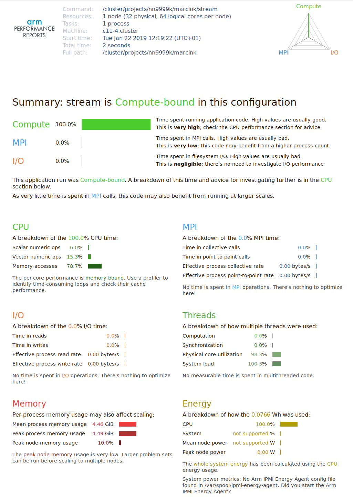

STREAM benchmark
The purpose of the STREAM benchmark is to measure the effective memory bandwidth of modern CPU-based architectures. This is done by measuring the time of four loops that operate on large arrays (vectors) that do not fit into the CPU cache:
Copy :
b[:] = a[:]Scale:
b[:] = const*a[:]Add :
c[:] = a[:] + b[:]Triad:
c[:] = a[:] + const*b[:]
The sourcecode
(stream.c) is
compiled using the Intel icc compiler as follows:
$ module load intel/2018b
$ icc -shared-intel -mcmodel=medium -O3 -qopt-streaming-stores always -qopenmp -DSTREAM_ARRAY_SIZE=200000000 -o stream stream.c
Executing it on Fram without profiling yields the following results:
$ OMP_NUM_THREADS=32 GOMP_CPU_AFFINITY=0-31 ./stream
[...]
-------------------------------------------------------------
Function Best Rate MB/s Avg time Min time Max time
Copy: 115552.5 0.027806 0.027693 0.028218
Scale: 115161.9 0.027867 0.027787 0.028039
Add: 123187.5 0.039026 0.038965 0.039094
Triad: 123121.2 0.039070 0.038986 0.039528
-------------------------------------------------------------
The maximum achieved bandwidth is roughly 123GB/s. The same test can be executed with profiling:
$ OMP_NUM_THREADS=32 GOMP_CPU_AFFINITY=0-31 perf-report ./stream
-------------------------------------------------------------
Function Best Rate MB/s Avg time Min time Max time
Copy: 114720.9 0.028145 0.027894 0.028477
Scale: 115345.0 0.027875 0.027743 0.028063
Add: 122577.0 0.039353 0.039159 0.039696
Triad: 122761.6 0.039490 0.039100 0.039679
-------------------------------------------------------------
The results are essentially the same, hence we can be sure that in this case there is no significant overhead due to profiling.
Below is the HTML performance summary generated by perf-report:

The profiler identified the code as Compute-bound. Strictly speaking, the code is memory bandwidth bound, which becomes clear when you look at the CPU time breakdown: 80% of the time is reported as spent in the memory access. Some time is reported as used by numeric (floating-point) operations. While it is true that STREAM does use FLOPs, when running on all CPU cores the bottleneck is the memory access, and the time needed to execute the FP instructions is fully overlapped by the slow memory instructions. This can be seen when comparing the results of Copy and Scale, or Add and Triad tests: those pairs differ by one floating point operation, but their execution time is essentially the same. So in fact the Memory Access row should read close to 100%.
This discrepancy is an artifact of profiling. Since during runtime the memory and floating point operations are as much as possible overlapped by the CPU, it is sometimes difficult to say, which class of instructions is the bottleneck. That’s why such a performance report should be treated as a high level overview and a suggestion, rather than a definite optimization guide.
The code is parallelized using OpenMP. In the Threads section of the report there is no mention of thread synchronization overhead, which is correct: STREAM is trivially parallel, with no explicit data exchange between the threads.